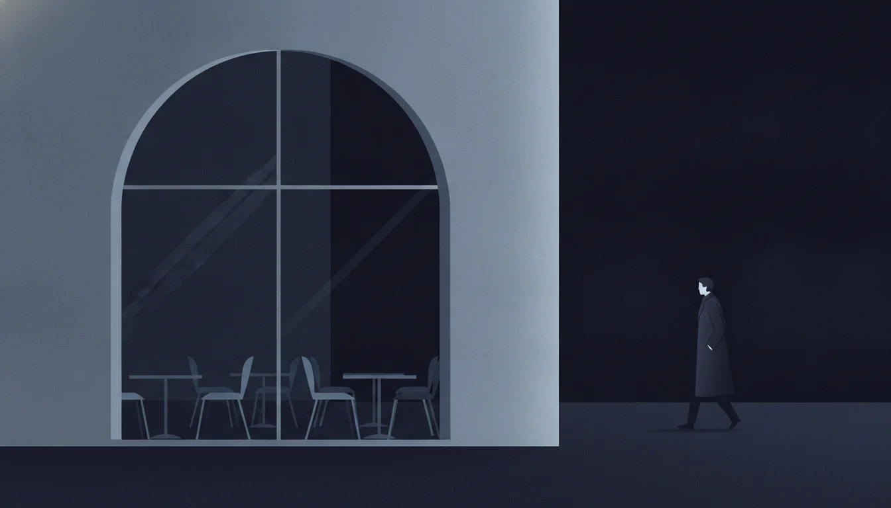

This is a story we see every week.
A good business, losing customers it never knew it had. Scroll to watch what happens when the manual work disappears.

The phone rings out
Bookings only by phone. Half the calls come when nobody can answer.
Enquiries go cold at night
Every unanswered message is a customer who went somewhere else.
Midnight admin
The owner does the books when everyone else sleeps.


Then we sat down together.
For fifteen minutes.
One specific idea.
An agreed scope.
Then we built.

Phone-only bookings
The reservation book sits empty while the phone rings out.
Direct bookings, day and night
The AI receptionist answers every call and the calendar fills itself.
Messages pile up unread
WhatsApp enquiries stack up in the dark, going cold one by one.
Answered in seconds
The WhatsApp agent replies instantly, captures the lead, and hands the good ones to you.
The busywork never ends
Sticky notes, spreadsheets, copy-paste between five apps.
One report with your coffee
The busywork runs itself overnight. You read one morning summary.

Visitors leave and never return
No way to reach the customer who loved it here last month.
One-time visitors become regulars
QR opt-ins and personalised offers bring them back, again and again.
Numbers from production, not a pitch deck
We show the mechanism and let the results speak. These are real.
10+ / 5+ / 3+
Websites, apps and products delivered end to end.
Two weeks
From idea to shipped, for a client app in Germany.
10–15 hours a week
Saved by one automation, every week, for its users.
Guests come back
A restaurant's regulars return more often on personalised offers.
Your business, after
Calls answered. WhatsApp handled. Bookings filled. Customers returning. One subscription, wired by an engineer who stays.